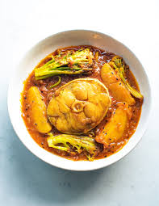

🐟 Macher Jhol (Bengali Fish Curry)

Ingredients
- 500g Rohu or Katla fish (cut into steaks)
- 2 potatoes (peeled and quartered)
- 2 tomatoes (chopped)
- 1 tsp ginger paste
- 2–3 green chilies (slit)
- 1/2 tsp turmeric powder
- 1/2 tsp red chili powder
- 1/2 tsp cumin powder
- Salt to taste
- Mustard oil for cooking
- Fresh coriander (optional, for garnish)
Instructions
- Marinate the fish with turmeric and salt. Set aside for 15 minutes.
- Heat mustard oil until it smokes. Fry the fish pieces until golden on both sides. Remove and set
aside.
- Fry the potatoes until lightly browned and remove.
- In the same oil, add ginger paste, green chilies, tomatoes, and spices. Cook until tomatoes break
down.
- Add potatoes and about 1.5 cups of water. Bring to a boil and simmer until potatoes are tender.
- Add fried fish and cook for 5 more minutes until flavors combine.
- Garnish with fresh coriander if using.
💡 Tip: Always heat mustard oil until smoky before cooking for authentic flavor.